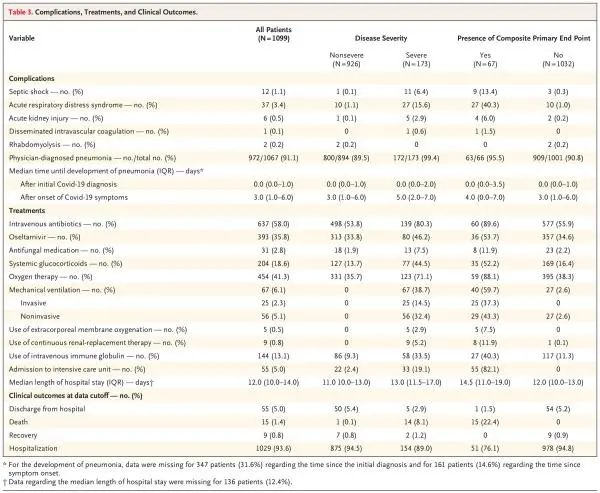

新冠患者潜伏期24天？ 钟南山：单纯根据最小最大值容易误读
原文链接 备份链接 图片来源：图虫创意 记者：陈鑫 “ ‘超长潜伏期’的患者只是个例，本身就没有考虑偏差，不足以成为判定最长潜伏期的依据。” ” 关于“新冠病毒潜伏期最长24天”的话题，钟南山团队在最新公布的论文中指出，单纯根据最小、最大 …
澎湃新闻记者 贺梨萍
当地时间2月28日，由国家卫健委高级别专家组组长、中国工程院院士钟南山领衔的“中国2019新型冠状病毒疾病的临床特征”研究论文在顶级医学期刊《新英格兰医学杂志》（NEJM）上在线公开发表。该研究纳入了自2019年12月11日至2020年1月29日来自全国31个省(市)共552家医院的1099例确诊新冠肺炎患者。

该研究的作者共有37名，作者单位包括国家呼吸系统疾病临床医学研究中心、武汉市金银潭医院、华中科技大学同济医学院附属协和医院、广州医科大学第一附属医院胸肿瘤科、黄冈市中心医院、南方医科大学器官衰竭防治国家重点实验室、香港中文大学、中国医学科学院北京协和医学院、浙江大学医学院附属第一医院传染病诊治国家重点实验室等。钟南山为通讯作者，研究团队代表中国新冠肺炎医疗专家组。
此前的当地时间2月9日，该论文在向《新英格兰医学杂志》投稿的同时，也同时在预印本网站medRxiv上率先公开（当时未经同行评议），并引起了广泛关注。
该项研究显示，在1099例患者中，926例为非重症，173例为重症。重症患者的年龄比非重症患者大7岁（中位数）。此外，重症患者有合并症的情况（38.7%）比非重症患者（21.0%）常见。不过，重症患者和非重症患者的暴露史相似。
研究得出的中位潜伏期为4天（四分位距，2-7），重度、非重度组新冠患者各有一例患者的潜伏期达24天。不过，团队认为，单纯根据最小、最大值评估人群的潜伏期容易引起误读。
值得注意的是，入院时43.8%的患者有发热，但住院期间88.7%有发热。不发热的新冠肺炎患者比例高于SARS-CoV（1%）和MERS-CoV（2%）感染患者，因此如果监测病例的定义侧重于检测发热，则不发热的患者可能会被漏诊。
相对于SARS-CoV和MERS-CoV，新冠病毒的致死率较低。研究团队在这项研究中确定的病死率为1.4%，低于近期其他团队报道的病死率。他们认为，原因很可能是样本量和病例纳入标准的差异。他们同时认为，由于轻症患者和未就医患者并未纳入本研究，因此真实的病死率可能更低。研究团队还强调，尽管新冠病毒和SARS-CoV具有种属相似性，但一些临床特征可以将新冠肺炎与SARS-CoV、MERS-CoV及季节性流感区分开来。
不能排除“超级传播者”的存在
研究团队获得了2019年12月11日至2020年1月29日期间国家卫健委收到的，经实验室确诊的新冠肺炎住院患者和门诊患者的病历，并汇总了数据。研究数据截止日期为2020年1月31日。
新冠肺炎确诊病例的定义为鼻拭子和咽拭子样本高通量测序或实时逆转录-聚合酶链反应（RT-PCR）检测结果呈阳性。仅实验室确诊病例被纳入分析。
研究团队从电子病历提取了患者的近期暴露史、临床症状或体征以及入院时的实验室检查结果。影像学评估包括胸片或CT，所有实验室检查均根据患者的临床诊治需求实施。实验室评估包括全血细胞计数、血液化学分析、凝血试验、肝肾功能评估，以及电解质、C反应蛋白、降钙素原、乳酸脱氢酶和肌酸激酶测定。
根据美国胸科学会（American Thoracic Society）的社区获得性肺炎指南，研究团队将患者入院时的新冠肺炎严重程度分为严重和非严重。
截至2020年1月29日，有7736例新冠肺炎患者在552家研究中心住院治疗，研究团队获得了其中1099例患者（14.2%）的临床症状和结局数据。武汉金银潭医院收治的患者量最大（132例）。全国30个省、自治区和直辖市有1856家收治新冠肺炎患者的定点医院，该项研究纳入的医院占了其中的29.7%。
该项研究纳入的患者中，3.5%为医务人员，1.9%有野生动物接触史；483例患者（43.9%）为武汉居民。在武汉外居住的患者中，72.3%有与武汉居民的接触史，其中31.3%曾去过武汉；25.9%的非武汉居民既未去过武汉，也无与武汉居民的接触史。
研究团队认为，分析显示约2%的患者有野生动物直接接触史，四分之三以上的患者是武汉居民、曾去过武汉或曾有与武汉居民的接触史。这些发现与其他最新报道一致，包括家庭聚集性疫情、无症状患者传播疾病和分为三个阶段的暴发模式。他们认为，该项研究不能排除“超级传播者”的存在。
在这样研究中，潜伏期定义为接触传染源（野生动物或者疑似或确诊病例）的可能最早日期与出现症状（即咳嗽、发热、乏力或肌痛）的可能最早日期之间的间隔期。研究得出的中位潜伏期为4天（四分位距，2-7）。
患者中位年龄为47岁（四分位距，35-58）；15岁以下的患者占0.9%。女性占41.9%。入院时43.8%的患者有发热，但住院期间88.7%有发热。排在其后的最常见症状是咳嗽（67.8%）；恶心或呕吐（5.0%）和腹泻（3.8%）不常见。在整个人群中，23.7%有至少一种合并症（如高血压和慢性阻塞性肺疾病）。入院时，926例患者的新冠肺炎严重程度被归类为非重症，173例患者被归类为重症。重症患者的年龄比非重症患者大7岁（中位数）。此外，重症患者有合并症的情况（38.7%）比非重症患者（21.0%）常见。不过，重症患者和非重症患者的暴露史相似。
从影像学和实验室检查结果来看，在入院时进行的975次CT扫描中，86.2%有异常结果。胸部CT的最常见表现为磨玻璃影（56.4%）和双肺斑片状影（51.8%）。877例非重症患者中的157例（17.9%）和173例重症患者中的5例（2.9%）无影像学或CT异常。
入院时，83.2%的患者有淋巴细胞减少，36.2%有血小板减少，33.7%有白细胞减少。大部分患者的C反应蛋白水平升高；丙氨酸转氨酶、天冬氨酸转氨酶、肌酸激酶和d二聚体水平升高的情况较少见。与非重症患者相比，重症患者的实验室异常（包括淋巴细胞减少和白细胞减少）更为明显。
研究团队在讨论环节提到，在新冠肺炎疫情初期，患者就诊时症状、影像学结果和疾病严重程度的多样性使疾病诊断变得复杂。
值得一提的是，该项研究还发现，重度、非重度组新冠患者各有一例患者的潜伏期达24天。
不过，论文的并列第一作者关伟杰、梁文华、何建行教授和钟南山教授在解读时着重提到，仔细查阅整个人群的潜伏期分布规律，发现潜伏期大于14天的共13例（12.7%），而潜伏期大于18天的仅有8例（7.3%）。
他们认为，单纯根据最小、最大值评估人群的潜伏期容易引起误读。
入院时的呼吸功能受损与结局较差相关
新冠肺炎患者的主要复合终点是送入重症监护病房（ICU）、采用机械通气或死亡。次要终点包括死亡率，从出现症状至发生复合终点的时间，以及从出现症状至发生复合终点中各构成部分的时间。
在该项研究中，67例患者（6.1%）发生了主要复合终点事件，包括送入ICU的5.0%、接受有创机械通气的2.3%和死亡的1.4%。173例重症患者中有43例（24.9%）发生了主要复合终点事件。在全部患者中，复合终点的累积风险为3.6%；在重症患者中，累积风险为20.6%。
在治疗方面，大部分患者（58.0%）接受了抗生素静脉用药，35.8%接受了奥司他韦治疗；41.3%接受了吸氧治疗，6.1%接受了机械通气；重症患者接受这些治疗的比例较高。重症患者接受机械通气的比例高于非重症患者（无创通气，32.4%vs.0%；有创通气，14.5%vs.0%）。
204例患者（18.6%）接受了全身性糖皮质激素治疗，重症患者接受该治疗的比例高于非重症患者（44.5%vs.13.7%）。在这204例患者中，33例（16.2%）被送入ICU，17例（8.3%）接受了有创通气，5例（2.5%）死亡。5例重症患者（0.5%）接受了体外膜式氧合治疗。研究显示，中位住院时间为12.0天（均值，12.8）。在住院期间，大部分患者被诊断为肺炎（91.1%），其次是ARDS（3.4%）和休克（1.1%）。重症患者被诊断为肺炎的比例高于非重症患者（99.4%vs.89.5%）。

并发症、治疗和临床终点
研究团队提到，尽管与新冠病毒相关的死亡总人数多，但病死率似乎低于SARS-CoV和MERS-CoV。而患者入院时的呼吸功能受损（疾病严重程度的主要驱动因素）与结局较差相关。
值得注意的是，研究团队在这项研究中确定的病死率为1.4%，低于近期其他团队报道的病死率。他们认为，原因很可能是样本量和病例纳入标准的差异。他们同时认为，由于轻症患者和未就医患者并未纳入本研究，因此真实的病死率可能更低。
应与SARS、MERS及季节性流感区分开来
研究团队在讨论环节指出，SARS-CoV、MERS-CoV和高致病性流感的一般传播途径包括呼吸道飞沫传播和直接接触传播，新冠病毒的传播途径很可能也相同。但目前已在胃肠道、唾液和尿液内检出新冠病毒，因此需要对这些潜在传播途径进行研究。
他们认为，与近期其他研究的结果一致，研究团队发现新冠肺炎的临床特征与SARS-CoV相似。发热和咳嗽是主要症状，胃肠道症状不常见，因此提示与SARS-CoV、MERS-CoV和季节性流感相比，新冠病毒具有不同的趋向性。
不发热的新冠肺炎患者比例高于SARS-CoV（1%）和MERS-CoV（2%）感染患者，因此如果监测病例的定义侧重于检测发热，则不发热的患者可能会被漏诊。淋巴细胞减少常见，而且某些病例达到重度减少。
研究团队还强调，尽管新冠病毒和SARS-CoV具有种属相似性，但一些临床特征可以将新冠肺炎与SARS-CoV、MERS-CoV及季节性流感区分开来。
研究团队同时提到，研究还存在一些明显的局限性，包括部分病例的接触史和实验室检查记录不完整、非专科医院存在基础设施缺乏和医务人员培训不足、只能估算本研究中有记录信息的291例患者的潜伏期、许多患者仍在住院，数据截止时结局未知等。
他们在局限性中还强调了一点，“我们无疑遗漏了无症状或居家治疗的轻症患者，因此我们的研究队列可能代表了新冠肺炎比较严重的一面。”
本期编辑 常琛
推荐阅读


原文链接 备份链接 图片来源：图虫创意 记者：陈鑫 “ ‘超长潜伏期’的患者只是个例，本身就没有考虑偏差，不足以成为判定最长潜伏期的依据。” ” 关于“新冠病毒潜伏期最长24天”的话题，钟南山团队在最新公布的论文中指出，单纯根据最小、最大 …
原文链接 备份链接 我们医护人员只是整个事件的一个环节，降低死亡率、提升治愈率，靠的是国家总体布局，靠的是全体人民的共同参与。 文 | 杨跃杰（郑州市第六人民医院重症隔离病区主任） 1月25日，我进入“新冠”隔离病区，历时一个多月。其 …
原文链接 备份链接 澎湃新闻记者 贺梨萍 张若婷 在法律政策允许并征得患者家属同意后，第一例、第二例新冠肺炎逝者遗体解剖工作已于2月16日在武汉市金银潭医院完成。2月16日至2月24日，由刘良及附属同济医院病理科王国平教授领衔的华中科技大 …
原文链接 备份链接 新冠肺炎逝者遗体解剖已完成11例，据首份观察报告，肺部深处多粘液的情况，对临床治疗的化痰、排痰方案决策有帮助，对多器官的深入影响仍待进一步检测 2020年2月初，武汉金银潭医院隔离病区内，医护人员正在给新冠肺炎患者做治 …
原文链接 备份链接 *************▲*************刘良和他的团队，右二为刘良。 （校方供图/图） 全文共1927字，阅读大约需要5分钟。 临床治疗上，如果粘液没有被化解的情况下给患者单纯给氧，可能达不到目的，有时 …